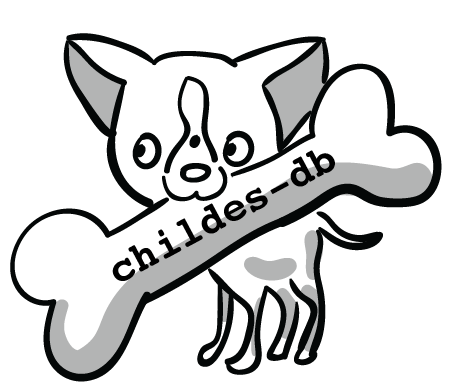

<div id="wrapper">
	<!--start: Container -->
	<div class="container">

		<!-- <div style="margin-top:20px">
			
		</div> -->

		<div class="container">
		  <!-- <div class="jumbotron less-pad">
		  	<div class="row">
			  	<div>  </div>
			  	<div> <center><h2 style="text-align:center">childes-db</h2></center> </div>
			  	<div>  </div>
		  	</div>
		  </div>   -->    
		  <br/>
		  <div class="jumbotron">
		    <div class="row">
		        <div class="col-md-2 left">
		            
		        </div>
		        <div class="col-md-6 center" style="text-align:center; margin-top:25px; margin-left:22px; color:black; font-size:18px; font-family: Open Sans,Helvetica Neue,Helvetica,Arial,sans-serif;">
		            <h2 style="color:black; font-size:55px; font-family: Open Sans, Helvetica Neue,Helvetica,Arial,sans-serif;">childes-db</h2>
		            <br/>
		            A flexible and reproducible interface to CHILDES
		        </div>
		        <div style="float: right">
		        	<a href="https://childes.talkbank.org" target="_blank">
		            	
		            </a>
		        </div>
		    </div>
		</div>
		</div>

		<!-- <div style="margin: 0 auto; width: 300px; height: 300px; margin-top: 25px;">
			
		</div> -->

  		<!-- start: Row -->
  		<div class="row">

    		<!-- <a href="docs.html"><div class="span4">
      			<div class="icons-box"> -->
      				<!-- ico-ok ico-color circle-color big -->
      				<!--  ico-ok circle big-->
      				<!-- ico-white circle-color-full big-color -->
					<!-- <i class="ico-file ico-white circle-color-full big-color"></i></a>
					<div class="title"><h4>Documentation</h4></div>
					<p>
						Learn about the CHILDES project, our childes-db database, and the API.
					</p>
					<div class="clear"></div>
				</div>
    		</div> -->

    		<a href="api.html">
    		<div class="span6">
      			<div class="icons-box">
					<div class="title"><h3>API Tutorial</h3></div>
					<p style="font-size: 16px">
						Get a hands on walk-through on accessing <code>childes-db</code> through R.
					</p>
					<div class="clear"></div>
					
					<!-- <i class="ico-list ico-white circle-color-full big-color"></i> --></a>
				</div>
    		</div>

    		<a href="analyses.html">
    		<div class="span6">
      			<div class="icons-box">
					<div class="title"><h3>Visualizations</h3></div>
					<p style="font-size: 16px">
						Explore the data in <code>childes-db</code> using our interactive applications.
					</p>
					<div class="clear"></div>
					
					<!-- <i class="ico-stats ico-white circle-color-full big-color"></i> --></a>
				</div>
    		</div>

  		</div>
		<!-- end: Row -->

		<!-- start: Hero Unit - Main hero unit for a primary marketing message or call to action -->
  		<div class="hero-unit">

    		<p>
    			The <code>childes-db</code> project is an open database storing child language datasets from <a href="https://childes.talkbank.org">CHILDES</a> in a well-documented, easily accessible, tabular format. It also provides a versioning system for corpora and tools to facilitate reproducible research with child language corpora. Researchers can now interface with CHILDES through <a href="analyses.html" style="color:#3399f3">interactive visualizations</a>, the <a href="https://langcog.github.io/childesr//index.html" style="color:#3399f3">childesr</a> R package, the <a href="https://pypi.org/project/childespy/" style="color:#3399f3">childespy</a> Python package, or directly through MySQL.
			</p>
			<p>
				For a complete overview along with examples, refer to <a style="color:#3399f3" href="https://link.springer.com/article/10.3758/s13428-018-1176-7">our paper</a> in <i>Behavior Research Methods</i>. 

  		</div>
		<!-- end: Hero Unit -->
		<div class="hero-unit" style="background-color:lightgreen">
			<h3>New in 2020.1</h3>
    		<p>
    			<a href="releases.html#2020.1">2020.1</a> includes coverage for corpora from <a href="https://phonbank.talkbank.org">Phonbank</a> as well as CHILDES. We have also released a <a href="https://pypi.org/project/childespy/" style="color:#3399f3">Python package</a> to facilitate the use of CHILDES from Python.
			</p>
  		</div>
		
	</div>
	<!--end: Container-->

</div>
<!-- end: Wrapper  -->		

{% include footer.html %}